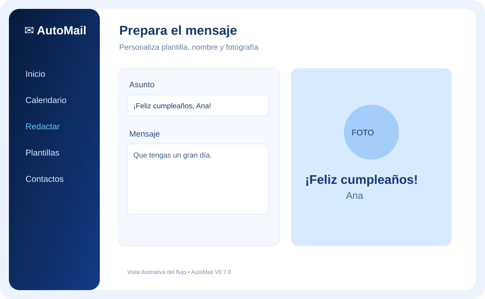
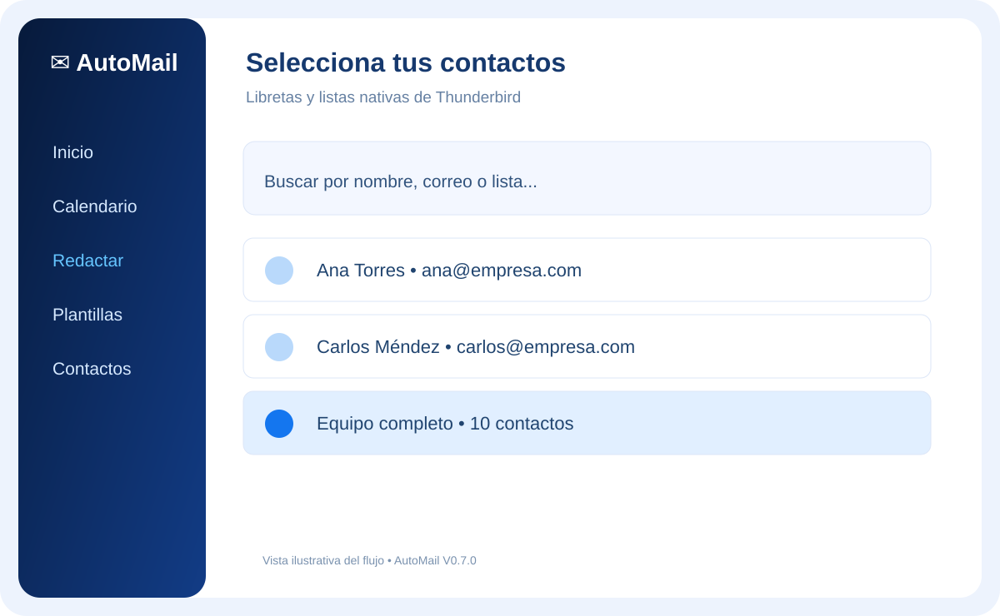
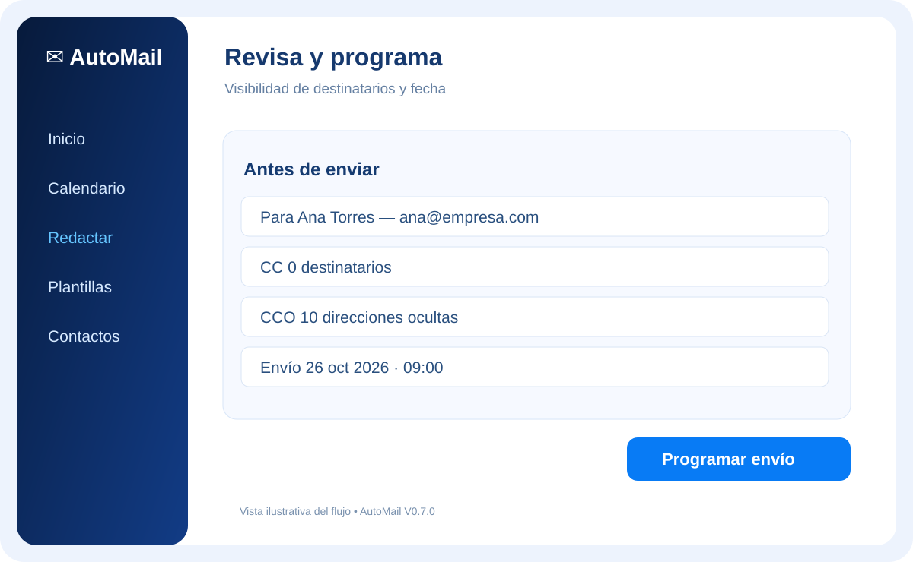

Correos programados
Elige fecha y hora, revisa pendientes y consulta el historial.
Planifica felicitaciones, comparte comunicados y prepara mensajes personalizados desde Thunderbird. Tu agenda, tus plantillas, tu privacidad.

AutoMail aprovecha los contactos y cuentas configurados en Thunderbird: no tendrás que duplicar agendas ni contraseñas.
Elige fecha y hora, revisa pendientes y consulta el historial.
Personaliza mensajes con nombre, datos y fotografía del contacto.
Reutiliza tus libretas y listas de distribución de Thunderbird.
Envía con Para, CC y CCO, revisando los participantes antes.
Crea comunicados con HTML y CSS compatible con correo.
Un solo archivo XPI, con Thunderbird activo en la PC.
Estas son vistas ilustrativas del recorrido. La apariencia final del complemento puede variar según versión y tema.


Elige un contacto o lista de Thunderbird. Define si usarás Para, CC o CCO.
Selecciona plantilla, escribe tu texto e incorpora una foto si corresponde.
Revisa los destinatarios, confirma la fecha y programa el correo.
Complemento XPI para Thunderbird 153 o superior. La publicación del instalador en GitHub Pages está pendiente de completar y verificar; por seguridad no mostramos un enlace que todavía no distribuye el archivo.
No. Debes mantener Thunderbird abierto o minimizado y la computadora encendida.
Solo los participantes en Para y CC son visibles. Los de CCO permanecen ocultos para los destinatarios.
El XPI 0.7.0 tiene configurado el canal de GitHub Pages. La actualización automática debe verificarse publicando 0.7.1 y comprobando su instalación sobre 0.7.0.
No se ha completado la revisión de Thunderbird Add-ons (ATN). Las verificaciones actuales son locales, no equivalen a una aprobación oficial.